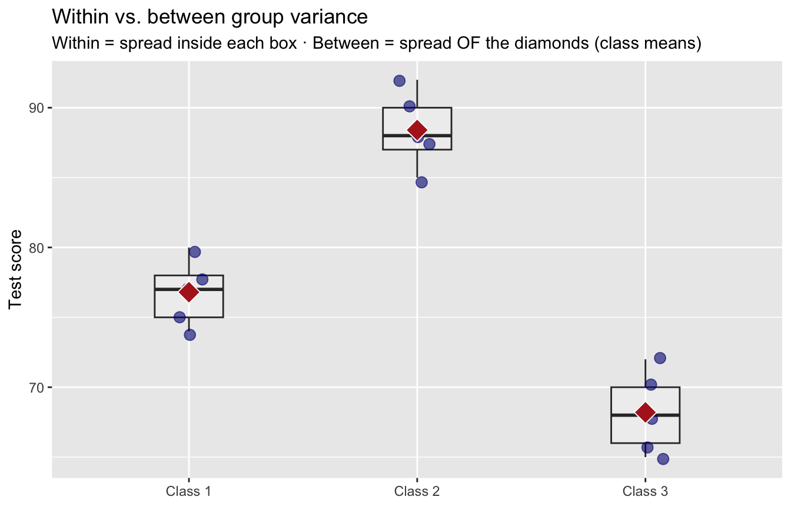
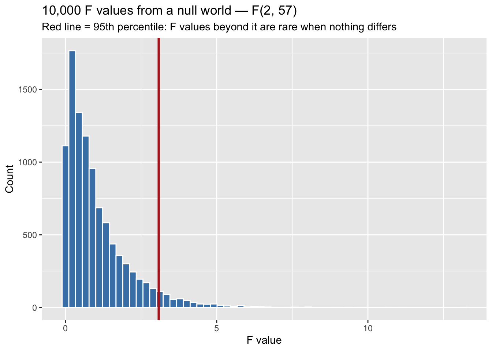
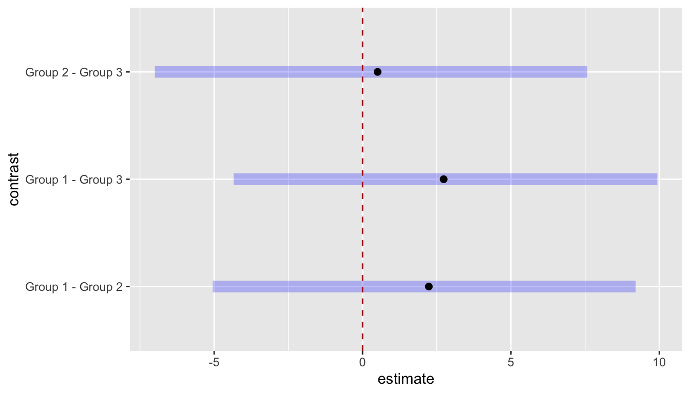

Demo Walkthrough · Session 8
ANOVA — comparing three or more means, in both traditions
What this page is. The Session 8 lecture demos, written down step by step. Every chunk below is self-contained — copy any of them into your own R session and they run as-is. Use this page to catch up after a missed class, or to re-run what happened on screen at your own pace.
What you’ll build
- A demonstration of why “just run a pile of t-tests” backfires — the false-alarm rate, computed
- ANOVA’s two kinds of variance, built by hand on three classrooms before any function does it for you
- A null world by construction — three random groups from the same 70 cities — and the F distribution it produces
-
aov()and Tukey’s HSD, with the ANOVA table reconciled against your hand computations - The Bayesian twin:
brm()+emmeans()+pairs(), read through HPD intervals - The same workflow on 30,000 real Chicago incidents — where “significant” and “dramatic” part ways
Setup
Everything below needs the tidyverse, two new packages (brms and emmeans — install once with install.packages(c("brms", "emmeans"))), and the course’s anchor dataset:
1 · Why not just run a pile of t-tests?
Three groups means 3 pairwise comparisons. Six groups means 15. Each test carries its own 5% false-alarm risk, and the risks pile up:
# A tibble: 5 × 3
groups pairwise_tests p_false_alarm
<dbl> <dbl> <dbl>
1 2 1 0.05
2 3 3 0.14
3 4 6 0.26
4 6 15 0.54
5 10 45 0.9 By six groups you have a coin-flip’s chance of at least one bogus “significant” difference; by ten it’s near-certain. ANOVA’s answer: ask one omnibus question — are all the group means plausibly equal? — at a single 5% risk. (When we go pairwise afterward, Tukey will restore the family-wise rate. Hold that thought.)
2 · Two kinds of variance, built by hand
The name is strange — ANalysis Of VAriance for a question about means — but the trick is the whole method. Start with three imaginary classrooms:
classrooms <- tibble(
score = c(75, 80, 78, 74, 77, # Class 1
88, 90, 92, 85, 87, # Class 2
70, 65, 68, 72, 66), # Class 3
classroom = factor(rep(c("Class 1", "Class 2", "Class 3"), each = 5))
)
class_stats <- classrooms |>
summarize(class_mean = mean(score), class_var = var(score), .by = classroom)
class_stats# A tibble: 3 × 3
classroom class_mean class_var
<fct> <dbl> <dbl>
1 Class 1 76.8 5.7
2 Class 2 88.4 7.3
3 Class 3 68.2 8.2Two different kinds of “spread” are hiding in that table. Within-group variance is how much scores bounce around inside each classroom; between-group variance is how much the classroom averages differ from each other:
mean(class_stats$class_var) # WITHIN: average spread inside a class[1] 7.066667var(class_stats$class_mean) # BETWEEN: spread of the class means[1] 102.76Between (102.8) dwarfs within (7.1) — the class averages are far more spread out than the chance bouncing inside classes would suggest. Signal-to-noise ratio ≈ 14.5. These classes look genuinely different.
ggplot(classrooms, aes(classroom, score)) +
geom_boxplot(alpha = 0.2, width = 0.3) +
geom_jitter(width = 0.08, size = 3, alpha = 0.6, color = "navy") +
geom_point(data = class_stats, aes(y = class_mean),
shape = 23, size = 5, fill = "firebrick", color = "white") +
labs(title = "Within vs. between group variance",
subtitle = "Within = spread inside each box · Between = spread OF the diamonds (class means)",
x = NULL, y = "Test score")
3 · A null world by construction: Stanton’s rain example
Now flip the situation: three groups where nothing differs — by construction. Base R’s precip holds annual precipitation for 70 U.S. cities. Draw three random groups of 20 from the same 70 cities:
[1] 34.100 31.835 31.255The means differ a little — but any differences here are pure sampling luck. The null hypothesis is true by construction. Now the same two variances:
[1] 132.6697[1] 2.260108Within ≈ 133, between ≈ 2.3 — the classrooms’ pattern, completely flipped. Why so lopsided? City-to-city rainfall varies a lot (Phoenix vs. Mobile), so within is big; but each group’s mean averages 20 cities, and Session 4 taught you means fluctuate far less than raw values (\(SE = \sigma/\sqrt{n}\)). With no real group differences, between-group variance is nothing but the tiny sampling noise of three means. That’s the diagnostic: between ≫ within → something real separates the groups; between ≪ within → nothing but noise. All we need is a ruler for “how much bigger is big enough.”
The ruler: F, and what it does in a null world
\[F \;=\; \frac{\text{between-group variance}}{\text{within-group variance}} \;=\; \frac{\text{signal}}{\text{noise}}\]
When the null is true, F bounces around low values by luck of the draw. Don’t take that on faith — draw 10,000 F values from a null world and look:
set.seed(705) # inline seed: keeps this particular histogram (and its cutoff) stable
f_null <- tibble(f = rf(10000, df1 = 2, df2 = 57)) # our design: 3 groups, N = 60
cutoff <- quantile(f_null$f, 0.95)
ggplot(f_null, aes(f)) +
geom_histogram(bins = 60, fill = "steelblue", color = "white") +
geom_vline(xintercept = cutoff, color = "firebrick", linewidth = 1.1) +
labs(title = "10,000 F values from a null world — F(2, 57)",
subtitle = "Red line = 95th percentile: F values beyond it are rare when nothing differs",
x = "F value", y = "Count")
cutoff 95%
3.083248 The 95% cutoff for this design lands near ≈ 3.1 (theory says qf(0.95, 2, 57) ≈ 3.16 — simulation is how we watch the theory). An F far beyond it means our data are unlikely under the null — the same logic as every test we’ve run.
4 · Running the ANOVA with aov()
aov() wants long format — one row per observation, one column saying which group it belongs to:
Df Sum Sq Mean Sq F value Pr(>F)
group 2 90 45.2 0.341 0.713
Residuals 57 7562 132.7 F = 0.34, p = 0.71. That F sits squarely in the fat part of the histogram above — nowhere near the cutoff. No evidence the groups differ. Correct answer — they’re the same population by construction.
The table is our two variances, dressed up
Reconcile the ANOVA table against the numbers you computed by hand:
- Mean Sq Residuals = 132.7 — exactly the within-group variance from Section 3.
-
Mean Sq group = 45.2 = 20 × 2.26 — the between-group variance, scaled by the group size. Why × 20? A 2-inch gap between means built on 20 cities each is far stronger evidence than the same gap built on 2 —
aov()bakes the sample size into the signal. -
F = 45.2 / 132.7 = 0.34. So when your hand-computed ratio and
aov()’s F disagree, this scaling is why — same logic, different units.
Now make a difference artificially
Shift Group 3 down 15 inches — now there is a real difference, and we know exactly where it lives:
Df Sum Sq Mean Sq F value Pr(>F)
group 2 3775 1887.7 14.23 9.72e-06 ***
Residuals 57 7562 132.7
---
Signif. codes: 0 '***' 0.001 '**' 0.01 '*' 0.05 '.' 0.1 ' ' 1The within-group noise didn’t move (132.7 — shifting a whole group doesn’t change the spread inside it). The between-group signal exploded. F = 14.2, p ≈ 0.00001 — deep in the tail.
A significant F only says “something differs” — Tukey says what
TukeyHSD(shifted_model) Tukey multiple comparisons of means
95% family-wise confidence level
Fit: aov(formula = rainfall ~ group, data = rain_shifted)
$group
diff lwr upr p adj
Group 2-Group 1 -2.265 -11.0301 6.500103 0.8087836
Group 3-Group 1 -17.845 -26.6101 -9.079897 0.0000246
Group 3-Group 2 -15.580 -24.3451 -6.814897 0.0002129Group 3 differs from both others — intervals exclude 0, adjusted p-values tiny, exactly where we put the difference. Group 1 vs. Group 2: interval spans 0, p = 0.81 — no evidence, as designed. And these p-values are already adjusted for making all three comparisons — Tukey is the fix for the t-test pile-up problem from Section 1.
5 · The Bayesian twin: brm() + emmeans()
brms compiles models with your computer’s C++ toolchain. Expect the first model of each R session to pause ~a minute at “Compiling Stan program…” — that’s normal, not a crash.
Identical formula, Bayesian machinery:
bayes_rain <- brm(rainfall ~ group, data = rain,
chains = 2, iter = 2000, seed = 705, refresh = 0)Two independent MCMC chains, 2,000 draws each → a full posterior distribution for every group mean. emmeans() turns the fitted model into group summaries — one row per group, with the posterior median and a 95% HPD interval, the range holding the most credible values for that group’s mean:
rain_post <- emmeans(bayes_rain, ~ group)
rain_post group emmean lower.HPD upper.HPD
Group 1 34.2 28.8 38.9
Group 2 32.0 27.1 37.1
Group 3 31.4 26.5 36.5
Point estimate displayed: median
HPD interval probability: 0.95 What we really care about are differences:
pairs(rain_post) contrast estimate lower.HPD upper.HPD
Group 1 - Group 2 2.233 -5.05 9.20
Group 1 - Group 3 2.733 -4.34 9.93
Group 2 - Group 3 0.506 -7.00 7.57
Point estimate displayed: median
HPD interval probability: 0.95 plot(pairs(rain_post)) +
geom_vline(xintercept = 0, linetype = 2, color = "firebrick")
Every 95% HPD interval for a pairwise difference crosses 0: zero — “no difference” — remains a credible value for every contrast. Same verdict as F = 0.34, p = 0.71. Two traditions, one conclusion. When a difference is real, its interval abandons 0 — you’ll see that on the Chicago data below.
The prior we just used. We didn’t state a prior, so brms fell back on its defaults: essentially flat on the group coefficients — every difference equally believable before the data — and weakly informative on the intercept and spread. Flat priors mean “the data do the talking,” which is fine at this n, but say so: “we used brms default priors” belongs in any writeup that reports a posterior. And notice the pattern across the course — ttestBF() in Session 6, brm() today, the correlation package in Session 10 are different interfaces to the same move: prior + likelihood → posterior. The interface changes; the reasoning never does. Session 10 shows what happens when you deliberately change the prior — and when it matters.
6 · Real data: does the clock differ by crime category?
In Session 5 we found violent crimes average slightly later in the day than property crimes — two groups. Chicago’s data sort every incident into three categories, and ANOVA takes all three in one shot:
# A tibble: 3 × 4
crime_category mean_hour sd_hour n
<chr> <dbl> <dbl> <int>
1 Violent 12.8 6.87 9148
2 Other 12.1 6.95 10481
3 Property 12.5 6.63 10371Violent runs latest (12.8), Other earliest (12.1). Gaps of fractions of an hour, with SDs near 7 — real structure, or noise? And remember: n = 30,000, and big samples detect tiny things.
Df Sum Sq Mean Sq F value Pr(>F)
crime_category 2 2351 1175.3 25.3 1.05e-11 ***
Residuals 29997 1393374 46.5
---
Signif. codes: 0 '***' 0.001 '**' 0.01 '*' 0.05 '.' 0.1 ' ' 1F(2, 29997) = 25.3, p ≈ 10⁻¹¹. Something differs, emphatically — but that’s all the omnibus F will ever tell us. Which pairs, and by how much?
TukeyHSD(chicago_model) Tukey multiple comparisons of means
95% family-wise confidence level
Fit: aov(formula = hour ~ crime_category, data = crimes)
$crime_category
diff lwr upr p adj
Property-Other 0.4285629 0.20732516 0.6498006 0.0000168
Violent-Other 0.6812419 0.45269164 0.9097921 0.0000000
Violent-Property 0.2526790 0.02356458 0.4817934 0.0263613All three intervals exclude 0 — every category differs from every other. Now look at the sizes: 0.25 to 0.68 hours. That’s 15 to 41 minutes, on a 24-hour clock, against SDs near 7 hours. The Bayesian version is the exact three lines from Section 5 with hour ~ crime_category swapped in — nothing new to learn — and it agrees: every HPD interval for a pairwise difference excludes zero (the lecture runs it in full; only the compile-and-sample wait argues against re-fitting it here).
Detectable ≠ dramatic. Both traditions agree the mean incident hour genuinely differs across categories — and the biggest gap is 41 minutes. Detecting a difference is not the same as its mattering. Report direction and size, every time: “Mean incident hour differed across crime categories, F(2, 29997) = 25.3, p < .001; violent crimes averaged ≈ 15 minutes later than property crimes, 95% CI [0.02, 0.48] hours.” “Significant” without magnitude is malpractice — Session 6’s lesson, now with three groups.
Try a variation
- In the shift demo, change
- 15to- 5inches. Does F still clear the cutoff? Which Tukey comparisons survive, and which lose significance? - Add
groups = 15to the alpha-inflation table. How many pairwise tests would that demand, and what’s the false-alarm probability? - Delete the
set.seed(705)line in the rain-groups chunk and re-run the draw plusaov()a few times. How much do F and p bounce around when the null is true? (You’re watching the left half of the F histogram, one draw at a time.) - Filter
crimesto the four most commonprimary_typevalues (count()will find them) and runaov(hour ~ primary_type)plus Tukey. With six pairwise comparisons, which specific crime types actually differ on the clock?